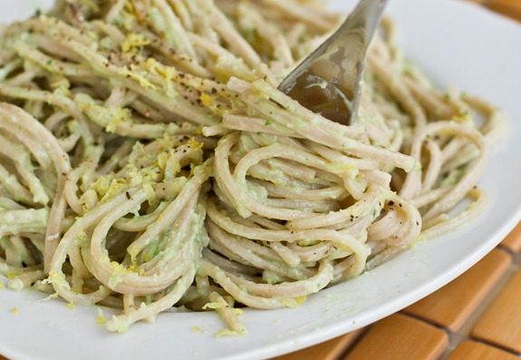

Avocado Pasta

Creamy, thick, and rich with lots of garlic flavour and a hint of lemon, this is one of my favourite pasta dishes. The avocado works wonderfully in this recipe to create a sauce so creamy and thick you will think there is cream hiding in there.
Ingredients
- 9 ounces (255 g) uncooked pasta
- 1 medium garlic clove
- 1/4 cup lightly packed fresh basil leaves, plus more for serving
- 1 to 2 tablespoons (5 to 10mL) fresh lemon juice, to taste
- 1 tablespoon (15 mL) extra-virgin olive oil, plus more if needed
- 1 ripe medium avocado, pitted
- 1 tablespoon (15 mL) water
- 1/4 to 1/2 teaspoon fine sea salt, to taste
- Freshly ground black pepper, to taste
- Lemon zest, for serving
Steps
- Bring a large pot of salted water to a boil. Cook the pasta according to the instructions on the package. For a lighter option, serve the avocado sauce with zucchini noodles.
- While the pasta cooks, make the sauce: In a food processor, combine the garlic and basil and pulse to mince. Add the lemon juice, oil, avocado, and 1 tablespoon water and process until smooth, stopping to scrape down the bowl as needed. If the sauce is too thick, add a bit more oil. Season with salt and pepper to taste.
- Drain the pasta and place it back in the pot. Add all of the avocado sauce and stir until combined. You can gently rewarm the pasta if it has cooled slightly, or simply serve it at room temperature.
- Top with pepper, lemon zest, and fresh basil leaves, if desired.